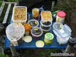

ИЗДАНИЕ 62

КРАТКИЕ РЕКОМЕНДАЦИИ
Задача прикормления - привлечь рыбу, но не накормить ее.
Прикормка состоит из "скелета" (толокно, сухари, отруби, жмых и др.), кормовой основы (мотыль, опарыш, рубленные черви, трубочник) и добавок (различные масла и пряно-ароматические растения).
Толокно, сухая глина, яичный порошок - цементируют прикормку. Мотыль, опарыш, черви, речной песок - делают ее рассыпчатой. Сухие дафнии, сухое молоко, сухая кровь, мелкие опилки - дают обильную муть. Жмых, поджаренные семена подсолнечника, льна, конопли, различные масла и пряные растения - запах.
Компоненты прикормки сначала смешивают в сухом виде в ведре, а-затем понемногу добавляют воду и тщательно все
перемешивают. Если воды много, то прикормка получается o липкой и лежит на дне комками. Рыба поедает ее, не обращая внимания на насадку.
В процессе ужения в прикормку надо периодически добавлять воды и все ее содержимое перемешивать, иначе прикормка высохнет, а вместе с ней мелкий мотыль и рубленные черви, а опарыш уйдет на дно и прикормка потеряет привлекательность.
Масла добавляются в прикормку в конце замеса в виде эмульсии (несколько капель масла добавляются во флакончик с водой и он интенсивно взбалтывается). Этой эмульсией поливается вся прикормка.
В процессе ужения прикормка подбрасывается небольшими порциями. Для глубоководных рыб они должны быть
не больше куриного яйца, для верховодных - с грецкий орех.
Прикормка должна удовлетворять следующим условиям:
а) для верховодных рыб:
- при сжатии в кулаке образовывать плотный комок,
удобный для заброса на 5-7 м;
- при ударе о воду рассыпаться и медленно погружаться.
б) для глубоководных рыб:
- при сжатии в кулаке образовывать плотный комок,
удобный для заброса на 10-20 м;
РЕЦЕПТЫ
(Количество компонентов дано в весовых частях)
1.УКЛЕЙКА рецепт 1-4
2.ПЛОТВА рецепт 5-9
3.ЛЕЩ рецепт 10-14
4.ЯЗЬ рецепт 15-19
5.САЗАН, КАРП рецепт 20-24
6.КАРАСЬ рецепт 25-28
7.ОКУНЬ рецепт 29-30
РЕЦЕПТ 1
1.Сухари панировочные - 3
2.Толокно - 2
3.Жмых молотый - 1
4.Дафнии сухие - 1
5.Масло подсолнечное - 0,2
6.Молоко сухое - 0,2
7.Кровь сухая - 0,2
8.Мотыль мелкий - 5
9. Опарыш мелкий - 2
РЕЦЕПТ 2
1.Сухари молотые - 3
2.Яичный порошок - 1
3.Опилки мелкие - 2
4.Геркулес молотый - 2
5.Семя конопли жареное, молотое - 0,5
6.Масло льняное - 0,2
7.Опарыш мелкий - 2
РЕЦЕПТ 3
1.Сухари молотые - 3
2.Молоко сухое - 2
3.Крупа манная - 1
4.Скорлупа яичная мелкотолченая - 1
5.Поденка сушеная - 0,5
6.Семя льна жареное, молотое - 0,2
7.Опарыш мелкий - 2
РЕЦЕПТ 4
1.Отруби - 3
2.Жмых молотый - 2
3.Геркулес молотый - 2
4.Семечки березы - 0,2
5.Песок жареный речной - 1
6.Толокно - 2
7.Гаммариус сушеный - 0,5
8.Опарыш мелкий – 2
РЕЦЕПТ 5
1.Бисквит молотый - 3
2.Молоко сухое – 1
3: Сухари панировочные - 1
4.Молотая сухая глина - 1
5.Отруби - 1
6.Тмин - 1 щепотка
7.Мотыль мелкий - 0,5
8.Опарыш мелкий - 0,5
РЕЦЕПТ 6
1.Отруби поджаренные - 3
2.Жмых льняной молотый - 2
3.Толокно - 2
4.Молотая сухая глина - 1
5.Крапива молодая - 0,5
6.Семечки березы - 0,2
7.Чечевица - 0,2
8.Кориандр - 1 щеп.
9.Трубочник - 1
10.Опарыш мелкий – 2
РЕЦЕПТ 7
1.Рожь пареная - 3
2.Сухари молотые - 3
3.Толокно - 2
4.Геркулес молотый - 1
5.Семя конопли жареное молотое - 0,5
6.Нитчатые водоросли (шелковник) - 0,5
7.Чеснок протертый - 0,5 ст. л.
8.Опарыш мелкий - 2
РЕЦЕПТ 8
1.Пшеница пареная - 3
2.Сухари молотые - 2
3.Отруби поджаренные - 2
4.Семя тыквы жареное молотое - 2
5.Мелисса лимонная - 1 щеп.
6.Муравьиная кислота - 2-3 к.
7.Чабрец - 3 щеп.
8.Трубочник - 2
РЕЦЕПТ 9
1.Семя подсолнечника жареное молотое - 3
2.Сухари молотые - 2
3.Толокно - 2
4.Ячмень пареный - 2
5.Листья капусты мелкомолотые - 1
6.Укроп сушеный - 2 щеп.
7.Муравьиная кислота - 2-3 к.
8.Мотыль мелкий - 2
РЕЦЕПТ 10
1.Отруби - 2
2.Жмых подсолнечный молотый - 3
3.Кукурузные палочки молотые - 1
4.Молотая сухая глина - 1
5.Поденка сушеная молотая - 0,5
6.Кофейный напиток "Колос" - 0,5
7.Мотыль мелкий - 5
8.Опарыш мелкий - 3
РЕЦЕПТ 11
1.Сухари молотые - 3
2.Семя подсолнечника жареное молотое - 3
3.Комбикорм - 2
4.ЯИчный порошок - 1
5.Укроп сушеный - 2 щеп.
6.Молотая сухая глина - 1
7.Опарыш мелкий – 3
РЕЦЕПТ 12
1.Жмых льняной молотый - 4
2.Толокно - 3
3.Поденка сушеная молотая - 0,5
4.Конопля жареная молотая - 0,5
5.Орехи арахис жареные молотые - 1
6.Глина сухая молотая - 1
7.Яичный белок - 3 шт.
8.Чабрец - 3 щеп.
9.Трубочник - 3
10.Опарыш мелкий - 4
РЕЦЕПТ 13
1.Горох пареный - 3
2.Отруби - 3
3.Семя льна жареное молотое - 2
4.Яичный порошок - 1
5.Свекла протертая - 1
6.Молотая сухая глина - 1
7.Опарыш мелкий - 3
8.Черви рубленые – 4
РЕЦЕПТ 14
1.Овес пареный - 3
2.Жмых льняной молотый - 3
3.Геркулес молотый - 2
4.Толокно - 2
5.Песок речной жареный - 2
6.Молотая сухая глина - 1
7.Паста из опарышей - 3
8.Масло анисовое в подсолнечном - 2-3 кап. в 1 ст. л.
9.Мотыль мелкий - 4
РЕЦЕПТ 15
1.Гороховая мука - 5
2.Сухари молотые - 2
3.Семя подсолнечника жареное молотое - 3
4.Отруби пшеничные - 2
5.Нитчатые водоросли (шелковник) - 2
6.Молотая сухая глина - 1
7.Муравьиная кислота - 1-3 к.
8.Чабрец - 3 щеп.
9.Масло мятное - 2-3 к.
10.Мотыль мелкий - 5
11.Опарыш мелкий - 3
РЕЦЕПТ 16
1.Пшеница пареная - 5
2.Жмых подсолнечный молотый - 4
3.Толокно - 3
4.Сухари молотые - 2
5.Муравьиная кислота - 2-3 к.
6.Молотая сухая глина - 1
7.Поденка сушеная молотая - 0,5
8.Мята перечная - 1 ст. л.
9.Кровь спекшаяся - 1
10.Опарыш мелкий - 3
11.Мотыль мелкий - 4
РЕЦЕПТ 17
1.Горошек зеленый мятый - 5
2.Сухари молотые - 2
3.Яичный порошок - 2
4.Семя конопли жареное молотое - 0,5
5.Корки апельсиновые сушеные молотые - 1 щеп.
6.Мелисса лимонная - 1 щеп.
7.Рожь пареная - 3
8.Жмых льняной молотый - 3
9.Черви навозные рубленые - 4
10.Опарыш мелкий - 3
РЕЦЕПТ 18
1.Жмых подсолнечный молотый - 4
2.Комбикорм - 3
3.Толокно - 2
4.Нитчатые водоросли (шелковник) - 2
5.Укроп сушеный - 2 щеп.
6.Дафнии сырые - 0,5
7.Червь крапивный - 0,5
8.Мясо ракушек протертое - 3
9.Молотая сухая глина - 1
10.Опарыш мелкий – 3
РЕЦЕПТ 19
1.Горох пареный - 5
2.Отруби поджаренные - 3
3.Семя льна жареное молотое - 2
4.Крупа манная - 2
5.Гаммариус сушеный - 0,5
6.Жук майский молотый - 1
7.Мясо рака линючего - 3
8.Солод ржаной - 2
9.Молотая сухая глина - 1
10.Черви рубленные - 4
РЕЦЕПТ 20
1.Рожь пареная с солью - 5
2.Картофель недоваренный - 3
3.Сыр старый - 2
4.Семя льна жареное молотое - 3
5.Чеснок протертый - 1 ст. л.
6.Мясо рака линючего - 3
7.Мотыль мелкий - 2
РЕЦЕПТ 21
1.Пшеница пареная с солью - 5
2.Семя подсолнечника жареное молотое - 3
3.Мука кукурузная - 2
4.Творог - 3
5.Желток яйца сырой - 3 шт.
6.Мясо ракушек протертое - 3
7.Бобы, сваренные в касторовом масле - 2
8.По 2 капли анисового и лавандового масла в 1 ст. л. конопляного
РЕЦЕПТ 22
1.Горошек зеленый мятый - 2
2.Комбикорм - 3
3.Творог - 3
4.Каша перловая - 4
5.Семя конопли жареное молотое - 2
6.Мед - 0,1
7.Мясо рака линючего - 3
8.Масло мятное в льняном - 2-3 кап. в 1 ст. л.
РЕЦЕПТ 23
1.Кукуруза пареная с солью - 5
2.Отруби поджаренные - 3
3.Рис вареный - 3
4.Семя конопли жареное молотое - 2
5.Свекла вареная протертая - 2
6.Цвет липы сушеный - 0,5
7.Масло анисовое в льняном - 2-3 кап. в 1 ст. л.
8.Паста из опарыша - 2
9.Черви рубленные - 3
РЕЦЕПТ 24
1.Овес пареный с солью - 5
2.Гороховая мука - 3
3.Жмых льняной молотый - 3
4.Картофель недоваренный - 2
5.Орехи фундук жареные молотые - 1
6.Спирт камфарный - 2-3 к.
7.Масло лавандовое в льняном - 2-3 кап. в 1 ст. л.
8.Мотыль мелкий - 3
РЕЦЕПТ 25
1.Семя подсолнечника жареное молотое - 5
2.Каша пшенная - 3
3.Цвет липы сушеный - 0,5
4.Семя льна жареное молотое - 1
5.Черви рубленные - 3
6.По 2капли мятного и лавандового масла в 1 ст. л. конопляного
РЕЦЕПТ 26
1.Семя льна жареное молотое - 0,5
2.Каша пшенная - 3
3.Цвет липы сушеный - 0,5
4.Семя подсолнечника жареное молотое - 5
5.Черви рубленные - 3
6.По две капли мятного и лавандового масла в 1 ст. л. конопляного
РЕЦЕПТ 27
1.Рожь пареная с солью - 5
2.Картофель недоваренный - 2
3.Творог - 2
4.Жмых конопляный молотый - 3
5.Семя льна жареное молотое - 1
6.Мотыль мелкий - 3
7.По 2капли мятного и лавандового масла в 1 ст. л. конопляного
РЕЦЕПТ 28
1.Пшеница пареная с солью - 5
2.Жмых льняной молотый - 3
3.Толокно - 2
4.Сыр старый - 2
5.Ряска - 1
6.Мед - 0,3
7.Черви рубленные - 3
8.Масло анисовое в конопляном - 2-3 кап. в 1 ст. л.
РЕЦЕПТ 29
1.Мясо рака линючего - 3
2.Молотая сухая глина - 4
3.Кровь сырая - 1
4.Мормыш - 5
5.Яичная скорлупа мелкотолченая - 1
6.Мишура мелкорезанная - 0,5
7.Черви рубленые, выдержанные в смеси камфарного масла и гусиного жира - 5
РЕЦЕПТ 30
1.Мясо рака линючего - 3
2.Молотая сухая глина - 5
3.Кровь сухая - 0,5
4.Чешуя мелкой рыбы - 1
5.Мелкотолченая колба от разбитого термоса - 0,5
6.Черви рубленые, выдержанные в смеси камфарного масла и меда - 0,5
7.Мотыль мелкий - 3
8.Масло лавандовое - 2-3 к.
Уникальные издания.